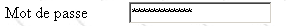
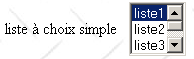

2. The Basics
In this chapter, we present the basics of web programming. Its primary goal is to introduce the key principles of web programming before applying them in practice with a specific language and environment. It includes numerous examples that you are encouraged to test in order to gradually "absorb" the philosophy of web development.
2.1. The Components of a Web Application
 |
Number | Role | Common Examples |
Server OS | Linux, Windows | |
Web Server | Apache (Linux, Windows) IIS (NT), PWS (Win9x) | |
Server-side scripts. They can be executed by server modules or by programs external to the server (CGI). | PERL (Apache, IIS, PWS) VBSCRIPT (IIS, PWS) JAVASCRIPT (IIS, PWS) PHP (Apache, IIS, PWS) JAVA (Apache, IIS, PWS) C#, VB.NET (IIS) | |
Database - This can be on the same machine as the program that uses it or on another machine via the Internet. | Oracle (Linux, Windows) MySQL (Linux, Windows) Access (Windows) SQL Server (Windows) | |
Client OS | Linux, Windows | |
Web browser | Netscape, Internet Explorer | |
Scripts executed on the client side within the browser. These scripts have no access to the client machine's disks. | VBScript (IE) JavaScript (IE, Netscape) PerlScript (IE) Java applets |
2.2. Data exchange in a web application with a form
 |
Number | Role |
The browser requests a URL for the first time (http://machine/url). No parameters are passed. | |
The web server sends the web page for that URL. It may be static or dynamically generated by a server-side script (SA) that may have used content from databases (SB, SC). Here, the script will detect that the URL was requested without any parameters and will generate the initial web page. The browser receives the page and displays it (CA). Browser-side scripts (CB) may have modified the initial page sent by the server. Then, through interactions between the user (CD) and the scripts (CB), the web page will be modified. In particular, forms will be filled out. | |
The user submits the form data, which must then be sent to the web server. The browser requests the initial URL or another one, as appropriate, and simultaneously transmits the form values to the server. It can use two methods for this: GET and POST. Upon receiving the client’s request, the server triggers the script (SA) associated with the requested URL, which will detect the parameters and process them. | |
The server delivers the web page generated by the program (SA, SB, SC). This step is identical to the previous step 2. Communication now proceeds according to steps 2 and 3. |
2.3. Some resources
Below is a list of resources for installing and using certain tools for web development. An appendix provides guidance on installing these tools.
- Apache: Installation and Implementation, O'Reilly | |
- Programming in Perl, Larry Wall, O'Reilly - CGI Applications in Perl, Neuss and Vromans, O'Reilly - the HTML documentation included with Active Perl | |
- Web Programming with PHP, Lacroix, Eyrolles - PHP User Manual available on the PHP website | |
- Interface Between the Web and Databases under WinNT, Alex Homer, Eyrolles | |
- JAVA Servlets, Jason Hunter, O'Reilly - Network Programming with Java, Elliotte Rusty Harold, O'Reilly - JDBC and Java, George Reese, O'Reilly | |
- The MySQL manual is available on the MySQL website - Oracle 8i on Linux, Gilles Briard, Eyrolles - Oracle 8i on NT, Gilles Briard, Eyrolles |
2.4. Notations
In the following, we will assume that a number of tools have been installed and will use the following notation:
notation | meaning |
root of the Apache server directory tree | |
Root directory of web pages served by Apache. Web pages must be located under this root directory. Thus, the URL http://localhost/page1.htm corresponds to the file <apache-DocumentRoot>\page1.htm. | |
root of the directory tree associated with the cgi-bin alias, where CGI scripts for Apache can be placed. Thus, the URL http://localhost/cgi-bin/test1.pl corresponds to the file <apache-cgi-bin>\test1.pl. | |
root of the web pages served by PWS. Web pages must be located under this root. Thus, the URL http://localhost/page1.htm corresponds to the file <pws-DocumentRoot>\page1.htm. | |
Root of the Perl directory tree. The perl.exe executable is usually located in <perl>\bin. | |
Root of the PHP language directory tree. The executable php.exe is usually located in <php>. | |
Root of the Java directory tree. Java-related executables are located in <java>\bin. | |
Root of the Tomcat server. Examples of servlets can be found in <tomcat>\webapps\examples\servlets and examples of JSP pages in <tomcat>\webapps\examples\jsp |
For each of these tools, please refer to the appendix, which provides installation instructions.
2.5. Static Web Pages, Dynamic Web Pages
A static page is represented by an HTML file. A dynamic page, on the other hand, is generated "on the fly" by the web server. In this section, we present various tests using different web servers and programming languages to demonstrate the universality of the web concept.
2.5.1. Static HTML (HyperText Markup Language) Page
Consider the following HTML code:
<html>
<head>
<title>essai 1 : une page statique</title>
</head>
<body>
<center>
<h1>Une page statique...</h1>
</body>
</html>
which generates the following web page:
The tests

test1
- Start the Apache server
- Place the test1.html script in <apache-DocumentRoot>
- View the URL http://localhost/essai1.html in a browser
- Stop the Apache server
test2
- Start the PWS server
- Place the script test1.html in <pws-DocumentRoot>
- View the URL http://localhost/essai1.html in a browser
2.5.2. An ASP (Active Server Pages) page
The test2.asp script:
<html>
<head>
<title>essai 1 : une page asp</title>
</head>
<body>
<center>
<h1>Une page asp générée dynamiquement par le serveur PWS</h1>
<h2>Il est <% =time %></h2>
<br>
A chaque fois que vous rafraîchissez la page, l'heure change.
</body>
</html>
produces the following web page:

The test
- Start the PWS server
- Place the essai2.asp script in <pws-DocumentRoot>
- Request the URL http://localhost/essai2.asp using a browser
2.5.3. A PERL (Practical Extracting and Reporting Language) script
The essai3.pl script:
#!d:\perl\bin\perl.exe
($secondes,$minutes,$heure)=localtime(time);
print <<HTML
Content-type: text/html
<html>
<head>
<title>essai 1 : un script Perl</title>
</head>
<body>
<center>
<h1>Une page générée dynamiquement par un script Perl</h1>
<h2>Il est $heure:$minutes:$secondes</h2>
<br>
A chaque fois que vous rafraîchissez la page, l'heure change.
</body>
</html>
HTML
;
The first line is the path to the perl.exe executable. Adjust it if necessary. Once executed by a web server, the script generates the following page:

The test
- Web server: Apache
- For reference, view the srm.conf or httpd.conf configuration file (depending on your Apache version) in <apache>\confs and look for the line mentioning cgi-bin to determine the <apache-cgi-bin> directory where you should place essai3.pl.
- Place the essai3.pl script in <apache-cgi-bin>
- Request the URL http://localhost/cgi-bin/essai3.pl
Note that it takes longer to load the Perl page than the ASP page. This is because the Perl script is executed by a Perl interpreter that must be loaded before it can run the script. It does not remain in memory permanently.
2.5.4. A PHP (Personal Home Page, HyperText Processor) script
The essai4.php script
<html>
<head>
<title>essai 4 : une page php</title>
</head>
<body>
<center>
<h1>Une page PHP générée dynamiquement</h1>
<h2>
<?
$maintenant=time();
echo date("j/m/y, h:i:s",$maintenant);
?>
</h2>
<br>
A chaque fois que vous rafraîchissez la page, l'heure change.
</body>
</html>
The previous script produces the following web page:
Tests


-
Check the srm.conf configuration file or Apache's httpd.conf in <Apache>\confs
-
For reference, check the PHP configuration lines
test1
-
Start the Apache server
-
Place essai4.php in <apache-DocumentRoot>
-
Request the URL http://localhost/essai4.php
test2
-
Start the PWS server
-
For reference, check the PWS configuration regarding PHP
-
Place essai4.php in <pws-DocumentRoot>\php
-
Request the URL http://localhost/essai4.php
2.5.5. A JSP (Java Server Pages) script
The heure.jsp script
<% //programme Java affichant l'heure %>
<%@ page import="java.util.*" %>
<%
// code JAVA pour calculer l'heure
Calendar calendrier=Calendar.getInstance();
int heures=calendrier.get(Calendar.HOUR_OF_DAY);
int minutes=calendrier.get(Calendar.MINUTE);
int secondes=calendrier.get(Calendar.SECOND);
// heures, minutes, secondes sont des variables globales
// qui pourront être utilisées dans le code HTML
%>
<% // code HTML %>
<html>
<head>
<title>Page JSP affichant l'heure</title>
</head>
<body>
<center>
<h1>Une page JSP générée dynamiquement</h1>
<h2>Il est <%=heures%>:<%=minutes%>:<%=secondes%></h2>
<br>
<h3>A chaque fois que vous rechargez la page, l'heure change</h3>
</body>
</html>
Once executed by the web server, this script produces the following page:

Tests
- Place the heure.jsp script in <tomcat>\jakarta-tomcat\webapps\examples\jsp (Tomcat 3.x) or in <tomcat>\webapps\examples\jsp (Tomcat 4.x)
- Start the Tomcat server
- Request the URL http://localhost:8080/examples/jsp/heure.jsp
2.5.6. Conclusion
The previous examples have shown that:
- an HTML page can be dynamically generated by a program. This is the whole point of web programming.
- the languages and web servers used can vary. Currently, the following major trends are observed:
- the Apache/PHP (Windows, Linux) and IIS/PHP (Windows) combinations
- ASP.NET technology on Windows platforms, which combines the IIS server with a .NET language (C#, VB.NET, etc.)
- Java servlet technology and JSP pages running on various servers (Tomcat, Apache, IIS) and on various platforms (Windows, Linux). It is this latter technology that will be discussed in greater detail in this document.
2.6. Browser-side scripts
An HTML page can contain scripts that are executed by the browser. There are many browser-side scripting languages. Here are a few:
Language | Supported browsers |
VBScript | IE |
JavaScript | IE, Netscape |
PerlScript | IE |
Java | IE, Netscape |
Let's look at a few examples.
2.6.1. A web page with a VBScript script, on the browser side
The vbs1.html page
<html>
<head>
<title>essai : une page web avec un script vb</title>
<script language="vbscript">
function reagir
alert "Vous avez cliqué sur le bouton OK"
end function
</script>
</head>
<body>
<center>
<h1>Une page Web avec un script VB</h1>
<table>
<tr>
<td>Cliquez sur le bouton</td>
<td><input type="button" value="OK" name="cmdOK" onclick="reagir"></td>
</tr>
</table>
</body>
</html>
The HTML page above contains not only HTML code but also a program intended to be executed by the browser that loads this page. The code is as follows:
<script language="vbscript">
function reagir
alert "Vous avez cliqué sur le bouton OK"
end function
</script>
The <script> and </script> tags are used to delimit scripts within an HTML page. These scripts can be written in various languages, and the language attribute of the <script> tag specifies the language used. In this case, it is VBScript. We will not go into detail about this language. The script above defines a function called react that displays a message. When is this function called? The following line of HTML code tells us:
The onclick attribute specifies the name of the function to be called when the user clicks the OK button. Once the browser has loaded this page and the user clicks the OK button, the following page will appear:

Tests
Only Internet Explorer (IE) is capable of executing VBScript scripts. Netscape requires add-ons to do so. We can perform the following tests:
test1
- Apache server
- vbs1.html script in <apache-DocumentRoot>
- Request the URL http://localhost/vbs1.html using Internet Explorer
test2
- PWS server
- vbs1.html script in <pws-DocumentRoot>
- Request the URL http://localhost/vbs1.html using Internet Explorer
2.6.2. A web page with a JavaScript script, on the browser side
The page: js1.html
<html>
<head>
<title>essai 4 : une page web avec un script Javascript</title>
<script language="javascript">
function reagir(){
alert ("Vous avez cliqué sur le bouton OK");
}
</script>
</head>
<body>
<center>
<h1>Une page Web avec un script Javascript</h1>
<table>
<tr>
<td>Cliquez sur le bouton</td>
<td><input type="button" value="OK" name="cmdOK" onclick="reagir()"></td>
</tr>
</table>
</body>
</html>
This is identical to the previous page, except that we have replaced VBScript with JavaScript. JavaScript has the advantage of being supported by both Internet Explorer and Netscape. Running it produces the same results:

The tests
test1
- Apache server
- js1.html script in <apache-DocumentRoot>
- Request the URL http://localhost/js1.html using the IE or Netscape browser
test2
- PWS server
- js1.html script in <pws-DocumentRoot>
- Request the URL http://localhost/js1.html using Internet Explorer or Netscape
2.7. Client-server communication
Let’s return to our initial diagram illustrating the components of a web application:
 |
Here, we are focusing on the exchanges between the client machine and the server machine. These occur over a network, and it is worth reviewing the general structure of exchanges between two remote machines.
2.7.1. The OSI model
The open network model known as the OSI (Open Systems Interconnection Reference Model), defined by the ISO (International Organization for Standardization), describes an ideal network in which communication between machines can be represented by a seven-layer model:
 |
Each layer receives services from the layer below it and provides its own services to the layer above it. Suppose two applications located on different machines A and B want to communicate: they do so at the Application layer. They do not need to know all the details of how the network operates: each application passes the information it wishes to transmit to the layer below it: the Presentation layer. The application therefore only needs to know the rules for interfacing with the Presentation layer. Once the information is in the Presentation layer, it is passed according to other rules to the Session layer, and so on, until the information reaches the physical medium and is physically transmitted to the destination machine. There, it will undergo the reverse process of what it underwent on the sending machine.
At each layer, the sender process responsible for sending the information sends it to a receiver process on the other machine belonging to the same layer as itself. It does so according to certain rules known as the layer protocol. We therefore have the following final communication diagram:
 |
The roles of the different layers are as follows:
Ensures the transmission of bits over a physical medium. This layer includes data processing terminal equipment (DPTE) such as terminals or computers, as well as data circuit termination equipment (DCTE) such as modulators/demodulators, multiplexers, and concentrators. Key points at this level are: . the choice of information encoding (analog or digital) . the choice of transmission mode (synchronous or asynchronous). | |
Hides the physical characteristics of the Physical Layer. Detects and corrects transmission errors. | |
Manages the path that information sent over the network must follow. This is called routing: determining the route that information must take to reach its destination. | |
Enables communication between two applications, whereas the previous layers only allowed communication between machines. A service provided by this layer can be multiplexing: the transport layer can use a single network connection (from machine to machine) to transmit data belonging to multiple applications. | |
This layer provides services that allow an application to open and maintain a working session on a remote machine. | |
It aims to standardize the representation of data across different machines. Thus, data originating from machine A will be "formatted" by machine A’s Presentation layer according to a standard format before being sent over the network. Upon reaching the Presentation layer of the destination machine B, which will recognize them thanks to their standard format, they will be formatted differently so that the application on machine B can recognize them. | |
At this level, we find applications that are generally close to the user, such as email or file transfer. |
2.7.2. The TCP/IP Model
The OSI model is an ideal model. The TCP/IP protocol suite approximates it in the following way:
 |
- the network interface (the computer’s network card) performs the functions of layers 1 and 2 of the OSI model
- the IP (Internet Protocol) layer performs the functions of layer 3 (network)
- the TCP (Transmission Control Protocol) or UDP (User Datagram Protocol) layer performs the functions of Layer 4 (transport). The TCP protocol ensures that the data packets exchanged between machines reach their destination. If they do not, it resends the lost packets. The UDP protocol does not perform this task, so it is up to the application developer to do so. This is why, on the internet—which is not a 100% reliable network—the TCP protocol is the most widely used. This is referred to as a TCP-IP network.
- The Application layer covers the functions of layers 5 through 7 of the OSI model.
Web applications reside in the Application layer and therefore rely on TCP/IP protocols. The Application layers of client and server machines exchange messages, which are entrusted to layers 1 through 4 of the model to be routed to their destination. To communicate with each other, the Application layers of both machines must “speak” the same language or protocol. The protocol used by web applications is called HTTP (HyperText Transfer Protocol). It is a text-based protocol, meaning that machines exchange lines of text over the network to communicate. These exchanges are standardized, meaning that the client has a set of messages to tell the server exactly what it wants, and the server also has a set of messages to provide the client with its response. This message exchange takes the following form:
 |
Client --> Server
When the client makes a request to the web server, it sends
- lines of text in HTTP format to specify what it wants
- an empty line
- optionally a document
Server --> Client
When the server responds to the client, it sends
- lines of text in HTTP format to indicate what it is sending
- an empty line
- optionally a document
Communications therefore follow the same format in both directions. In both cases, a document may be sent, even though it is rare for a client to send a document to the server. But the HTTP protocol allows for this. This is what enables, for example, subscribers of an ISP to upload various documents to their personal website hosted by that ISP. The documents exchanged can be of any type. Consider a browser requesting a web page containing images:
- the browser connects to the web server and requests the page it wants. The requested resources are uniquely identified by URLs (Uniform Resource Locators). The browser sends only HTTP headers and no document.
- The server responds. It first sends HTTP headers indicating what type of response it is sending. This may be an error if the requested page does not exist. If the page exists, the server will indicate in the HTTP headers of its response that it will send an HTML (HyperText Markup Language) document following them. This document is a sequence of lines of text in HTML format. HTML text contains tags (markers) that provide the browser with instructions on how to display the text.
- The client knows from the server’s HTTP headers that it will receive an HTML document. It will parse this document and may notice that it contains image references. These images are not included in the HTML document. It therefore makes a new request to the same web server to request the first image it needs. This request is identical to the one made in step 1, except that the requested resource is different. The server will process this request by sending the requested image to the client. This time, in its response, the HTTP headers will specify that the document sent is an image and not an HTML document.
- The client retrieves the sent image. Steps 3 and 4 will be repeated until the client (usually a browser) has all the documents needed to display the entire page.
2.7.3. The HTTP Protocol
Let’s explore the HTTP protocol through examples. What do a browser and a web server exchange?
2.7.3.1. The Response from an HTTP Server
Here, we’ll explore how a web server responds to requests from its clients. The Web service or HTTP service is a TCP/IP service that typically operates on port 80. It could operate on a different port. In that case, the client browser would need to specify that port in the URL it requests. A URL generally follows this format:
where
protocol | http for the web service. A browser can also act as a client for FTP, news, Telnet, and other services. |
machine | name of the machine hosting the web service |
port | Web service port. If it is 80, the port number can be omitted. This is the most common case |
path | path to the requested resource |
info | additional information provided to the server to specify the client's request |
What does a browser do when a user requests a URL to be loaded?
- It establishes a TCP/IP connection with the machine and port specified in the machine[:port] portion of the URL. Establishing a TCP/IP connection means creating a "channel" of communication between two machines. Once this channel is established, all information exchanged between the two machines will pass through it. The creation of this TCP-IP pipe does not yet involve the Web’s HTTP protocol.
- Once the TCP-IP connection is established, the client sends its request to the web server by sending lines of text (commands) in HTTP format. It sends the path/info portion of the URL to the server
- The server will respond in the same way and through the same connection
- One of the two parties will decide to close the connection. This depends on the HTTP protocol used. With HTTP 1.0, the server closes the connection after each of its responses. This forces a client that needs to make multiple requests to retrieve the various documents comprising a web page to open a new connection for each request, which incurs a cost. With the HTTP/1.1 protocol, the client can tell the server to keep the connection open until it tells the server to close it. It can therefore retrieve all the documents for a web page using a single connection and close the connection itself once the last document has been obtained. The server will detect this closure and close the connection as well.
To explore the exchanges between a client and a web server, we will use a generic TCP client. This is a program that can act as a client for any service using a text-based communication protocol, such as the HTTP protocol. These text lines will be typed by the user via the keyboard. This requires the user to know the communication protocol of the service they are trying to access. The server’s response is then displayed on the screen. The program was written in Java and can be found in the appendix. Here, we use it in a DOS window under Windows and call it as follows:
with
machine | name of the machine where the service to be contacted is running |
port | port where the service is provided |
With these two pieces of information, the program will open a TCP/IP connection to the specified machine and port. This connection will be used to exchange text lines between the client and the web server. The client’s lines are typed by the user on the keyboard and sent to the server. The text lines returned by the server as a response are displayed on the screen. A dialogue can thus take place directly between the user at the keyboard and the web server. Let’s try this with the examples already presented. We had created the following static HTML page:
<html>
<head>
<title>essai 1 : une page statique</title>
</head>
<body>
<center>
<h1>Une page statique...</h1>
</body>
</html>
that we view in a browser:

We can see that the requested URL is: http://localhost:81/essais/essai1.html. The web server is therefore running on localhost (the local machine) on port 81. If we view the HTML source of this web page (View/Source), we see the HTML text that was originally created:

Now let’s use our generic TCP client to request the same URL:
Dos>java clientTCPgenerique localhost 81
Commandes :
GET /essais/essai1.html HTTP/1.0
<-- HTTP/1.1 200 OK
<-- Date: Mon, 08 Jul 2002 08:07:46 GMT
<-- Server: Apache/1.3.24 (Win32) PHP/4.2.0
<-- Last-Modified: Mon, 08 Jul 2002 08:00:30 GMT
<-- ETag: "0-a1-3d29469e"
<-- Accept-Ranges: bytes
<-- Content-Length: 161
<-- Connection: close
<-- Content-Type: text/html
<--
<-- <html>
<-- <head>
<-- <title>essai 1 : une page statique</title>
<-- </head>
<-- <body>
<-- <center>
<-- <h1>Une page statique...</h1>
<-- </body>
<-- </html>
When the client is launched using the command java clientTCPgenerique localhost 81, a connection is established between the program and the web server running on the same machine (localhost) on port 81. Client-server communication in HTTP format can now begin. Recall that these requests have three components:
- HTTP headers
- blank line
- optional data
In our example, the client sends only one request:
GET /tests/test1.html HTTP/1.0
This line has three components:
HTTP command to request a resource. There are others: HEAD requests a resource but limits itself to the HTTP headers in the server’s response. The resource itself is not sent. PUT allows the client to send a document to the server | |
requested resource | |
HTTP protocol version used. Here, 1.0. This means the server will close the connection as soon as it sends its response |
HTTP headers must always be followed by a blank line. This is what the client has done here. This is how the client or server knows that the HTTP portion of the exchange is complete. Here, the client is finished. It has no document to send. The server’s response then begins, consisting in our example of all lines starting with the <-- symbol. It first sends a series of HTTP headers followed by a blank line:
<-- HTTP/1.1 200 OK
<-- Date: Mon, 08 Jul 2002 08:07:46 GMT
<-- Server: Apache/1.3.24 (Win32) PHP/4.2.0
<-- Last-Modified: Mon, 08 Jul 2002 08:00:30 GMT
<-- ETag: "0-a1-3d29469e"
<-- Accept-Ranges: bytes
<-- Content-Length: 161
<-- Connection: close
<-- Content-Type: text/html
<--
the server says
| |
the date/time of the response | |
the server identifies itself. Here it is an Apache server | |
date of the last modification of the resource requested by the client | |
... | |
unit of measurement for the data sent. Here, the byte | |
number of bytes in the document to be sent after the HTTP headers. This number is actually the size in bytes of the file essai1.html: | |
The server indicates that it will close the connection once the document has been sent | |
The server indicates that it will send text in HTML format. |
The client receives these HTTP headers and now knows that it will receive 161 bytes representing an HTML document. The server sends these 161 bytes immediately after the blank line that signaled the end of the HTTP headers:
<-- <html>
<-- <head>
<-- <title>essai 1 : une page statique</title>
<-- </head>
<-- <body>
<-- <center>
<-- <h1>Une page statique...</h1>
<-- </body>
<-- </html>
Here, we recognize the HTML file that was initially constructed. If our client were a browser, after receiving these lines of text, it would interpret them to display the following page to the user:

Let’s use our generic TCP client again to request the same resource, but this time with the HEAD command, which requests only the response headers:
Dos>java.bat clientTCPgenerique localhost 81
Commandes :
HEAD /essais/essai1.html HTTP/1.1
Host: localhost:81
<-- HTTP/1.1 200 OK
<-- Date: Mon, 08 Jul 2002 09:07:25 GMT
<-- Server: Apache/1.3.24 (Win32) PHP/4.2.0
<-- Last-Modified: Mon, 08 Jul 2002 08:00:30 GMT
<-- ETag: "0-a1-3d29469e"
<-- Accept-Ranges: bytes
<-- Content-Length: 161
<-- Content-Type: text/html
<--
We get the same result as before without the HTML document. Note that in its HEAD request, the client indicated that it was using HTTP version 1.1. This requires it to send a second HTTP header specifying the machine:port pair that the client wants to query: Host: localhost:81.
Now let’s request an image using both a browser and the generic TCP client. First, using a browser:

The file univ01.gif is 3167 bytes:
Now let’s use the generic TCP client:
E:\data\serge\JAVA\SOCKETS\client générique>java clientTCPgenerique localhost 81
Commandes :
HEAD /images/univ01.gif HTTP/1.1
host: localhost:81
<-- HTTP/1.1 200 OK
<-- Date: Tue, 09 Jul 2002 13:53:24 GMT
<-- Server: Apache/1.3.24 (Win32) PHP/4.2.0
<-- Last-Modified: Fri, 14 Apr 2000 11:37:42 GMT
<-- ETag: "0-c5f-38f70306"
<-- Accept-Ranges: bytes
<-- Content-Length: 3167
<-- Content-Type: image/gif
<--
Note the following points in the server's response:
| |
| |
|
2.7.3.2. An HTTP client’s request
Now, let’s ask ourselves the following question: if we want to write a program that “talks” to a web server, what commands must it send to the web server to obtain a given resource? We’ve already begun to answer this in the previous examples. We’ve encountered three commands:
| |
| |
|
There are other commands. To explore them, we will now use a generic TCP server. This is a program written in Java, which you will also find in the appendix. It is launched using the command: java genericTCPserver listeningPort, where listeningPort is the port to which clients must connect. The genericTCPserver program
- displays on the screen the commands sent by clients
- and sends them, in response, the lines of text typed on the keyboard by a user. It is therefore the user who acts as the server. In our example, the user at the keyboard will play the role of a web service.
Now let’s simulate a web server by launching our generic server on port 88:
Dos> java serveurTCPgenerique 88
Serveur générique lancé sur le port 88
Now let’s open a browser and request the URL http://localhost:88/exemple.html. The browser will then connect to port 88 on the localhost machine and request the /example.html page:

Now let’s look at our server window, which displays what the client sent it (some lines specific to the operation of the serveurTCPgenerique program have been omitted for simplicity):
Dos>java serveurTCPgenerique 88
Serveur générique lancé sur le port 88
...
<-- GET /exemple.html HTTP/1.1
<-- Accept: image/gif, image/x-xbitmap, image/jpeg, image/pjpeg, application/msword, */*
<-- Accept-Language: fr
<-- Accept-Encoding: gzip, deflate
<-- User-Agent: Mozilla/4.0 (compatible; MSIE 6.0; Windows NT 5.0; .NET CLR 1.0.3705; .NET CLR 1.0.2 914)
<-- Host: localhost:88
<-- Connection: Keep-Alive
<--
The lines preceded by the <-- symbol are those sent by the client. This reveals HTTP headers we haven't encountered yet:
| |
| |
| |
| |
|
The HTTP headers sent by the browser end with a blank line, as expected.
Let’s craft a response for our client. The user at the keyboard is the actual server here and can craft a response manually. Recall the response sent by a web server in a previous example:
<-- HTTP/1.1 200 OK
<-- Date: Mon, 08 Jul 2002 08:07:46 GMT
<-- Server: Apache/1.3.24 (Win32) PHP/4.2.0
<-- Last-Modified: Mon, 08 Jul 2002 08:00:30 GMT
<-- ETag: "0-a1-3d29469e"
<-- Accept-Ranges: bytes
<-- Content-Length: 161
<-- Connection: close
<-- Content-Type: text/html
<--
<-- <html>
<-- <head>
<-- <title>essai 1 : une page statique</title>
<-- </head>
<-- <body>
<-- <center>
<-- <h1>Une page statique...</h1>
<-- </body>
<-- </html>
Let's try to manually (on the keyboard) create a similar response. Lines beginning with --> : are sent to the client:
...
<-- Host: localhost:88
<-- Connection: Keep-Alive
<--
--> : HTTP/1.1 200 OK
--> : Server: serveur tcp generique
--> : Connection: close
--> : Content-Type: text/html
--> :
--> : <html>
--> : <head><title>Serveur generique</title></head>
--> : <body>
--> : <center>
--> : <h2>Reponse du serveur generique</h2>
--> : </center>
--> : </body>
--> : </html>
fin
The end command is specific to the operation of the serverTCPgenerique program. It stops the program from running and closes the connection between the server and the client. In our response, we have limited ourselves to the following HTTP headers:
HTTP/1.1 200 OK
--> : Server: serveur tcp generique
--> : Connection: close
--> : Content-Type: text/html
--> :
We do not specify the size of the file we are sending (Content-Length), but simply indicate that we will close the connection (Connection: close) after sending it. This is sufficient for the browser. Upon seeing the connection closed, it will know that the server’s response is complete and will display the HTML page that was sent to it. The page is as follows:
--> : <html>
--> : <head><title>Serveur generique</title></head>
--> : <body>
--> : <center>
--> : <h2>Reponse du serveur generique</h2>
--> : </center>
--> : </body>
--> : </html>
The browser then displays the following page:

If you click View/Source above to see what the browser received, you get:

that is, exactly what was sent from the generic server.
2.8. HTML
A web browser can display various documents, the most common being HTML (HyperText Markup Language) documents. These consist of text formatted with tags in the form <tag>text</tag>. Thus, the text <B>important</B> will display the text "important" in bold. There are standalone tags such as the <hr> tag, which displays a horizontal line. We will not review all the tags that can be found in HTML text. There are many WYSIWYG software programs that allow you to build a web page without writing a single line of HTML code. These tools automatically generate the HTML code for a layout created using the mouse and predefined controls. You can thus insert (using the mouse) a table into the page and then view the HTML code generated by the software to discover the tags to use for defining a table on a web page. It’s as simple as that. Furthermore, knowledge of HTML is essential since dynamic web applications must generate the HTML code themselves to send to web clients. This code is generated programmatically, and you must, of course, know what to generate so that the client receives the web page they want.
To summarize, you don’t need to know the entire HTML language to start web programming. However, this knowledge is necessary and can be acquired through the use of WYSIWYG web page builders such as Word, FrontPage, DreamWeaver, and dozens of others. Another way to discover the intricacies of HTML is to browse the web and view the source code of pages that feature interesting elements you haven’t encountered before.
2.8.1. An example
Consider the following example, created with FrontPage Express, a free tool included with Internet Explorer. The code generated by FrontPage has been simplified here. This example features some elements commonly found in a web document, such as:
- a table
- an image
- a link

An HTML document generally has the following form:
The entire document is enclosed within the <html>...</html> tags. It consists of two parts:
- <head>...</head>: This is the non-displayed part of the document. It provides information to the browser that will display the document. It often contains the <title>...</title> tag, which specifies the text that will appear in the browser's title bar. It may also contain other tags, including those that define the document's keywords, which are then used by search engines. This section may also contain scripts, usually written in JavaScript or VBScript, which will be executed by the browser.
- <body attributes>...</body>: This is the section that will be displayed by the browser. The HTML tags contained in this section tell the browser the "desired" visual layout for the document. Each browser interprets these tags in its own way. As a result, two browsers may display the same web document differently. This is generally one of the challenges faced by web designers.
The HTML code for our example document is as follows:
<html>
<head>
<title>balises</title>
</head>
<body background="/images/standard.jpg">
<center>
<h1>Les balises HTML</h1>
<hr>
</center>
<table border="1">
<tr>
<td>cellule(1,1)</td>
<td valign="middle" align="center" width="150">cellule(1,2)</td>
<td>cellule(1,3)</td>
</tr>
<tr>
<td>cellule(2,1)</td>
<td>cellule(2,2)</td>
<td>cellule(2,3</td>
</tr>
</table>
<table border="0">
<tr>
<td>Une image</td>
<td><img border="0" src="/images/univ01.gif" width="80" height="95"></td>
</tr>
<tr>
<td>le site de l'ISTIA</td>
<td><a href="http://istia.univ-angers.fr">ici</a></td>
</tr>
</table>
</body>
</html>
Only the points of interest to us have been highlighted in the code:
HTML | tags and HTML examples |
<title>tags</title> tags will appear in the browser's title bar when the document is displayed | |
<hr>: displays a horizontal line | |
<table attributes>....</table>: to define the table <tr attributes>...</tr>: to define a row <td attributes>...</td>: to define a cell examples: <table border="1">...</table>: the border attribute defines the thickness of the table border <td valign="middle" align="center" width="150">cell(1,2)</td>: defines a cell whose content will be cell(1,2). This content will be centered vertically (valign="middle") and horizontally (align="center"). The cell will have a width of 150 pixels (width="150") | |
<img border="0" src="/images/univ01.gif" width="80" height="95"> : defines an image with no border (border="0"), 95 pixels high (height="95"), 80 pixels wide (width="80"), and whose source file is /images/univ01.gif on the web server (src="/images/univ01.gif"). This link is located on a web document accessed via the URL http://localhost:81/html/balises.htm. Therefore, the browser will request the URL http://localhost:81/images/univ01.gif to retrieve the image referenced here. | |
<a href="http://istia.univ-angers.fr">here</a>: makes the text "here" a link to the URL http://istia.univ-angers.fr. | |
<body background="/images/standard.jpg">: indicates that the image to be used as the page background is located at the URL /images/standard.jpg on the web server. In the context of our example, the browser will request the URL http://localhost:81/images/standard.jpg to retrieve this background image. |
We can see in this simple example that to build the entire document, the browser must make three requests to the server:
- http://localhost:81/html/balises.htm to retrieve the document’s HTML source
- http://localhost:81/images/univ01.gif to retrieve the image univ01.gif
- http://localhost:81/images/standard.jpg to retrieve the background image standard.jpg
The following example shows a web form also created with FrontPage.

The HTML code generated by FrontPage and slightly cleaned up is as follows:
<html>
<head>
<title>balises</title>
<script language="JavaScript">
function effacer(){
alert("Vous avez cliqué sur le bouton Effacer");
}//effacer
</script>
</head>
<body background="/images/standard.jpg">
<form method="POST" >
<table border="0">
<tr>
<td>Etes-vous marié(e)</td>
<td>
<input type="radio" value="Oui" name="R1">Oui
<input type="radio" name="R1" value="non" checked>Non
</td>
</tr>
<tr>
<td>Cases à cocher</td>
<td>
<input type="checkbox" name="C1" value="un">1
<input type="checkbox" name="C2" value="deux" checked>2
<input type="checkbox" name="C3" value="trois">3
</td>
</tr>
<tr>
<td>Champ de saisie</td>
<td>
<input type="text" name="txtSaisie" size="20" value="qqs mots">
</td>
</tr>
<tr>
<td>Mot de passe</td>
<td>
<input type="password" name="txtMdp" size="20" value="unMotDePasse">
</td>
</tr>
<tr>
<td>Boîte de saisie</td>
<td>
<textarea rows="2" name="areaSaisie" cols="20">
ligne1
ligne2
ligne3
</textarea>
</td>
</tr>
<tr>
<td>combo</td>
<td>
<select size="1" name="cmbValeurs">
<option>choix1</option>
<option selected>choix2</option>
<option>choix3</option>
</select>
</td>
</tr>
<tr>
<td>liste à choix simple</td>
<td>
<select size="3" name="lst1">
<option selected>liste1</option>
<option>liste2</option>
<option>liste3</option>
<option>liste4</option>
<option>liste5</option>
</select>
</td>
</tr>
<tr>
<td>liste à choix multiple</td>
<td>
<select size="3" name="lst2" multiple>
<option>liste1</option>
<option>liste2</option>
<option selected>liste3</option>
<option>liste4</option>
<option>liste5</option>
</select>
</td>
</tr>
<tr>
<td>bouton</td>
<td>
<input type="button" value="Effacer" name="cmdEffacer" onclick="effacer()">
</td>
</tr>
<tr>
<td>envoyer</td>
<td>
<input type="submit" value="Envoyer" name="cmdRenvoyer">
</td>
</tr>
<tr>
<td>rétablir</td>
<td>
<input type="reset" value="Rétablir" name="cmdRétablir">
</td>
</tr>
</table>
<input type="hidden" name="secret" value="uneValeur">
</form>
</body>
</html>
The visual association between <--> and the HTML tag is as follows:
Visual | HTML tag |
<form method="POST" > | |
<input type="text" name="txtInput" size="20" value="a few words"> | |
<input type="password" name="txtPassword" size="20" value="aPassword"> | |
<textarea rows="2" name="inputArea" cols="20"> line1 line2 line3 </textarea> | |
<input type="radio" value="Yes" name="R1">Yes <input type="radio" name="R1" value="No" checked>No | |
<input type="checkbox" name="C1" value="one">1 <input type="checkbox" name="C2" value="two" checked>2 <input type="checkbox" name="C3" value="three">3 | |
<select size="1" name="cmbValues"> <option>option1</option> <option selected>option2</option> <option>option3</option> </select> | |
<select size="3" name="lst1"> <option selected>list1</option> <option>list2</option> <option>list3</option> <option>list4</option> <option>list5</option> </select> | |
<select size="3" name="lst2" multiple> <option>list1</option> <option>list2</option> <option selected>list3</option> <option>list4</option> <option>list5</option> </select> | |
<input type="submit" value="Submit" name="cmdSubmit"> | |
<input type="reset" value="Reset" name="cmdReset"> | |
<input type="button" value="Clear" name="cmdClear" onclick="clear()"> |
Let's review these different controls.
2.8.1.1. The
<form method="POST" > |
<form name="..." method="..." action="...">...</form> | |
name="exampleform": form name method="..." : method used by the browser to send the values collected in the form to the web server action="..." : URL to which the values collected in the form will be sent. A web form is enclosed within the tags <form>...</form>. The form can have a name (name="xx"). This applies to all controls found within a form. This name is useful if the web document contains scripts that need to reference form elements. The purpose of a form is to collect information entered by the user via the keyboard or mouse and send it to a web server URL. Which one? The one referenced in the action="URL" attribute. If this attribute is missing, the information will be sent to the URL of the document in which the form is located. This would be the case in the example above. Up until now, we have always viewed the web client as “requesting” information from a web server, never as “providing” information to it. How does a web client provide information (the data contained in the form) to a web server? We will return to this in detail a little later. It can use two different methods called POST and GET. The method="method" attribute, where method is either GET or POST, of the <form> tag tells the browser which method to use to send the information collected in the form to the URL specified by the action="URL" attribute. When the method attribute is not specified, the GET method is used by default. |
2.8.1.2. Input field


<input type="text" name="txtInput" size="20" value="some words"> <input type="password" name="txtMdp" size="20" value="aPassword"> |
<input type="..." name="..." size=".." value=".."> The `input` tag is available for various controls. The `type` attribute is used to distinguish between these different controls. | |
type="text": specifies that this is a text input field type="password": the characters in the input field are replaced by asterisks (*). This is the only difference from a normal input field. This type of control is suitable for entering passwords. size="20": number of characters visible in the field—does not prevent the entry of more characters name="txtInput": name of the control value="some words": text that will be displayed in the input field. |
2.8.1.3. Multi-line input field

<textarea rows="2" name="areaSaisie" cols="20"> line1 line2 line3 </textarea> |
<textarea ...>text</textarea> displays a multi-line text input field with text already inside | |
rows="2": number of rows cols="'20" : number of columns name="areaSaisie": control name |
2.8.1.4. Radio buttons

<input type="radio" value="Yes" name="R1">Yes <input type="radio" name="R1" value="no" checked>No |
<input type="radio" attribute2="value2" ....>text Displays a radio button with text next to it. | |
name="radio": name of the control. Radio buttons with the same name form a group of mutually exclusive buttons: only one of them can be selected. value="value": value assigned to the radio button. Do not confuse this value with the text displayed next to the radio button. The text is for display purposes only. checked: if this keyword is present, the radio button is checked; otherwise, it is not. |
2.8.1.5. Checkboxes
<input type="checkbox" name="C1" value="one">1 <input type="checkbox" name="C2" value="two" checked>2 <input type="checkbox" name="C3" value="three">3 |

<input type="checkbox" attribute2="value2" ....>text displays a checkbox with text next to it. | |
name="C1": name of the control. Checkboxes may or may not have the same name. Checkboxes with the same name form a group of associated checkboxes. value="value": value assigned to the checkbox. Do not confuse this value with the text displayed next to the radio button. The text is for display purposes only. checked: if this keyword is present, the radio button is checked; otherwise, it is not. |
2.8.1.6. Drop-down list (combo)
<select size="1" name="cmbValues"> <option>choice1</option> <option selected>option2</option> <option>option3</option> </select> |

<select size=".." name=".."> <option [selected]>...</option> ... </select> displays the text between the <option>...</option> tags in a list | |
name="cmbValeurs": name of the control. size="1": number of visible list items. size="1" makes the list function like a combo box. selected: if this keyword is present for a list item, that item appears selected in the list. In our example above, the list item choice2 appears as the selected item in the combo box when it is first displayed. |
2.8.1.7. Single-selection list
<select size="3" name="lst1"> <option selected>list1</option> <option>list2</option> <option>list3</option> <option>list4</option> <option>list5</option> </select> |

<select size=".." name=".."> <option [selected]>...</option> ... </select> displays the text between the <option>...</option> tags in a list | |
the same as for the drop-down list displaying only one item. This control differs from the previous drop-down list only in its size>1 attribute. |
2.8.1.8. Multi-select list
<select size="3" name="lst2" multiple> <option selected>list1</option> <option>list2</option> <option selected>list3</option> <option>list4</option> <option>list5</option> </select> |

<select size=".." name=".." multiple> <option [selected]>...</option> ... </select> displays the text between the <option>...</option> tags in a list | |
multiple: allows multiple items to be selected from the list. In the example above, items list1 and list3 are both selected. |
2.8.1.9. Button
<input type="button" value="Clear" name="cmdClear" onclick="clear()"> |

<input type="button" value="..." name="..." onclick="clear()" ....> | |
type="button": defines a button control. There are two other types of buttons: submit and reset. value="Clear": the text displayed on the button onclick="function()": allows you to define a function to be executed when the user clicks the button. This function is part of the scripts defined in the displayed web document. The syntax above is JavaScript syntax. If the scripts are written in VBScript, you would write onclick="function" without the parentheses. The syntax remains the same if parameters need to be passed to the function: onclick="function(val1, val2,...)" In our example, clicking the Clear button calls the following JavaScript clear function: The clear function displays a message:  |
2.8.1.10. Submit button
<input type="submit" value="Send" name="cmdSend"> |

<input type="submit" value="Send" name="cmdRenvoyer"> | |
type="submit": defines the button as a button for sending form data to the web server. When the user clicks this button, the browser will send the form data to the URL defined in the action attribute of the <form> tag, using the method defined by the method attribute of that same tag. value="Submit": the text displayed on the button |
2.8.1.11. Reset button
<input type="reset" value="Reset" name="cmdReset"> |

<input type="reset" value="Reset" name="cmdReset"> | |
type="reset": defines the button as a form reset button. When the user clicks this button, the browser will restore the form to the state in which it was received. value="Reset": the text displayed on the button |
2.8.1.12. Hidden field
<input type="hidden" name="secret" value="aValue"> |
<input type="hidden" name="..." value="..."> | |
type="hidden": specifies that this is a hidden field. A hidden field is part of the form but is not displayed to the user. However, if the user were to ask their browser to display the source code, they would see the presence of the <input type="hidden" value="..."> tag and thus the value of the hidden field. value="aValue": value of the hidden field. What is the purpose of a hidden field? It allows the web server to retain information across a client’s requests. Consider an online shopping application. The customer purchases a first item art1 in quantity q1 on the first page of a catalog and then moves to a new page in the catalog. To remember that the customer purchased q1 items of art1, the server can place these two pieces of information in a hidden field in the web form on the new page. On this new page, the client purchases q2 units of item art2. When the data from this second form is submitted to the server, the server will not only receive the information (q2,art2) but also (q1,art1), which is also part of the form as a hidden field that cannot be modified by the user. The web server will then place the information (q1,art1) and (q2,art2) into a new hidden field and send a new catalog page. And so on. |
2.8.2. Sending form values to a web server by a web client
We mentioned in the previous lesson that the web client has two methods for sending the values of a form it has displayed to a web server: the GET and POST methods. Let’s look at an example to see the difference between the two methods. We’ll revisit the previous example and handle it as follows:
- A browser requests the example’s URL from a web server
- Once the form is obtained, we fill it out
- before sending the form values to the web server by clicking the Submit button, we stop the web server and replace it with the generic TCP server used previously. Recall that this server displays on the screen the lines of text sent to it by the web client. This way, we will see exactly what the browser sends.
The form is filled out as follows:

The URL used for this document is as follows:

2.8.2.1. GET Method
The HTML document is programmed so that the browser uses the GET method to send the form values to the web server. We have therefore written:
We stop the web server and start our generic TCP server on port 81:
E:\data\serge\JAVA\SOCKETS\serveur générique>java serveurTCPgenerique 81
Serveur générique lancé sur le port 81
Now, let's go back to our browser to send the form data to the web server using the Submit button:

Here is what the generic TCP server receives:
<-- GET /html/balises.htm?R1=Oui&C1=un&C2=deux&txtSaisie=programmation+web&txtMdp=ceciestsecret&area
Saisie=les+bases+de+la%0D%0Aprogrammation+web&cmbValeurs=choix3&lst1=liste3&lst2=liste1&lst2=liste3&
cmdRenvoyer=Envoyer&secret=uneValeur HTTP/1.1
<-- Accept: image/gif, image/x-xbitmap, image/jpeg, image/pjpeg, application/msword, application/vnd
.ms-powerpoint, application/vnd.ms-excel, */*
<-- Referer: http://localhost:81/html/balises.htm
<-- Accept-Language: fr
<-- Accept-Encoding: gzip, deflate
<-- User-Agent: Mozilla/4.0 (compatible; MSIE 6.0; Windows NT 5.0; .NET CLR 1.0.3705)
<-- Host: localhost:81
<-- Connection: Keep-Alive
<--
It's all in the first HTTP header sent by the browser:
<-- GET /html/balises.htm?R1=Oui&C1=un&C2=deux&txtSaisie=programmation+web&txtMdp=ceciestsecret&area
Saisie=les+bases+de+la%0D%0Aprogrammation+web&cmbValeurs=choix3&lst1=liste3&lst2=liste1&lst2=liste3&
cmdRenvoyer=Envoyer&secret=uneValeur HTTP/1.1
We can see that this is much more complex than what we have encountered so far. It uses the GET HTTP/1.1 URL syntax, but in a specific form: GET URL?param1=value1¶m2=value2&... HTTP/1.1, where the parameters are the names of the web form controls and the values are the values associated with them. Let’s examine them more closely. Below is a three-column table:
- Column 1: shows the definition of an HTML control from the example
- Column 2: shows how this control appears in a browser
- Column 3: shows the value sent to the server by the browser for the control in Column 1, in the form it takes in the GET request from the example
HTML control | Visual | returned value(s) |
<input type="radio" value="Yes" name="R1">Yes <input type="radio" name="R1" value="no" checked>No | - the value of the value attribute of the radio button selected by the user. | |
<input type="checkbox" name="C1" value="one">1 <input type="checkbox" name="C2" value="two" checked>2 <input type="checkbox" name="C3" value="three">3 | C1=one C2=two - values of the value attributes of the checkboxes selected by the user | |
<input type="text" name="txtInput" size="20" value="a few words"> | txtInput=web+programming - text typed by the user in the input field. Spaces have been replaced by the + sign | |
<input type="password" name="txtMdp" size="20" value="aPassword"> | txtPassword=thisIsSecret - text typed by the user in the input field | |
<textarea rows="2" name="inputArea" cols="20"> line1 line2 line3 </textarea> | inputField=the+basics+of+web%0D%0A web+programming - text typed by the user in the input field. %OD%OA is the end-of-line marker. Spaces have been replaced by the + sign | |
<select size="1" name="cmbValeurs"> <option>choice1</option> <option selected>choice2</option> <option>choice3</option> </select> | cmbValues=dropdown3 - value selected by the user from the single-select list | |
<select size="3" name="lst1"> <option selected>list1</option> <option>list2</option> <option>list3</option> <option>list4</option> <option>list5</option> </select> |  | lst1=list3 - value selected by the user from the single-select list |
<select size="3" name="lst2" multiple> <option selected>list1</option> <option>list2</option> <option selected>list3</option> <option>list4</option> <option>list5</option> </select> |  | lst2=list1 lst2=list3 - values selected by the user from the multi-select list |
<input type="submit" value="Submit" name="cmdSubmit"> | cmdSubmit=Submit - name and value attribute of the button used to send the form data to the server | |
<input type="hidden" name="secret" value="aValue"> | secret=aValue - value attribute of the hidden field |
Let’s do the same thing again, but this time let the web server generate the response and see what it is. The page returned by the web server is as follows:

It is exactly the same as the one initially received before the form was filled out. To understand why, we need to look again at the URL requested by the browser when the user clicks the Submit button:
<-- GET /html/balises.htm?R1=Oui&C1=un&C2=deux&txtSaisie=programmation+web&txtMdp=ceciestsecret&area
Saisie=les+bases+de+la%0D%0Aprogrammation+web&cmbValeurs=choix3&lst1=liste3&lst2=liste1&lst2=liste3&
cmdRenvoyer=Envoyer&secret=uneValeur HTTP/1.1
The requested URL is /html/tags.htm. We also pass the form values to this URL. For now, the URL /html/tags.htm, which is a static page, does not use these values. Therefore, the previous GET request is equivalent to
and that is why the server sent us the initial page again. Note that the browser does display the full URL that was requested:

2.8.2.2. POST Method
The HTML document is programmed so that the browser now uses the POST method to send the form values to the web server:
We stop the web server and launch the generic TCP server (which we’ve seen before but modified slightly for this purpose) on port 81:
E:\data\serge\JAVA\SOCKETS\serveur générique>java serveurTCPgenerique2 81
Serveur générique lancé sur le port 81
Now, we return to our browser to send the form data to the web server using the Submit button:
Here is what the generic TCP server receives:
<-- POST /html/balises.htm HTTP/1.1
<-- Accept: image/gif, image/x-xbitmap, image/jpeg, image/pjpeg, application/msword, application/vnd
.ms-powerpoint, application/vnd.ms-excel, */*
<-- Referer: http://localhost:81/html/balises.htm
<-- Accept-Language: fr
<-- Content-Type: application/x-www-form-urlencoded
<-- Accept-Encoding: gzip, deflate
<-- User-Agent: Mozilla/4.0 (compatible; MSIE 6.0; Windows NT 5.0; .NET CLR 1.0.3705)
<-- Host: localhost:81
<-- Content-Length: 210
<-- Connection: Keep-Alive
<-- Cache-Control: no-cache
<--
<-- R1=Oui&C1=un&C2=deux&txtSaisie=programmation+web&txtMdp=ceciestsecret&areaSaisie=les+bases+de+la%0D%0Aprogrammation+web&cmbValeurs=choix3&lst1=liste3&lst2=liste1&lst2=liste3&cmdRenvoyer=Envoyer&secret=uneValeur
Compared to what we already know, we note the following changes in the browser request:
- The initial HTTP header is no longer GET but POST. The syntax is POST HTTP/1.1 URL, where URL is the URL requested by the browser. At the same time, POST means that the browser has data to send to the server.
- The Content-Type: application/x-www-form-urlencoded header specifies the type of data the browser will send. This data consists of form data (x-www-form) that has been URL-encoded. This encoding ensures that certain characters in the transmitted data are converted to prevent the server from misinterpreting them. Thus, the space is replaced by +, the line break by %OD%OA, and so on. Generally, all characters in the data that could be misinterpreted by the server (&, +, %, etc.) are converted to %XX, where XX is their hexadecimal code.
- The line Content-Length: 210 tells the server how many characters the client will send once the HTTP headers are complete, i.e., after the blank line signaling the end of the headers.
- The data (210 characters): R1=Yes&C1=one&C2=two&txtInput=web+programming&txtPassword=thisissecret&areaInput=the+basics+of+web%0D%0Aweb+programming&cmbValues=choice3&lst1=list3&lst2=list1&lst2=list3&cmdSubmit=Submit&secret=aValue
Note that data sent via POST is in the same format as data sent via GET.
Is one method better than the other? We’ve seen that if a form’s values were sent by the browser using the GET method, the browser would display the requested URL in its Address bar in the form URL?param1=val1¶m2=val2&.... This can be seen as either an advantage or a disadvantage:
- an advantage if you want to allow the user to save this parameterized URL to their bookmarks
- a disadvantage if you do not want the user to have access to certain form information, such as hidden fields
From now on, we will use the POST method almost exclusively in our forms.
2.8.2.3. Retrieving Values from a Web Form
A static page requested by a client that also sends parameters via POST or GET cannot retrieve these parameters in any way. Only a program can do this, and it is the program that will then generate a response to the client—a response that will be dynamic and generally based on the received parameters. This is the realm of web programming, a topic we will cover in more detail in the next chapter with an introduction to Java web programming technologies: servlets and JSP pages.